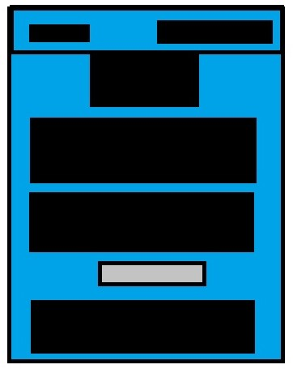
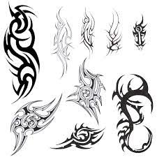
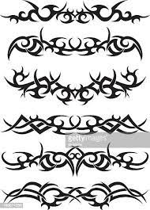

This is the wireframe for my Homepage its very simple designed i would like to add more things and change a few more things but this is the basic Prototype design. The heading will be at the top on the right with the tabs on the left. I was the tabs to be highlighted in order to show which of the tabs are currently activated. i currently added a compliment generator just to have fun with the website so far.
This is the wireframe for my blog section so far its just the words with thier headings on screen. if the parahraph has a sub heading i added it in thier as grey. i made all the headings centre aligned.I would also like the words to be alit more centred so ythat it is not againts the sides of the page and this way i can add a border of some kind to my design.
so far as for style i would like the style to mostly include the color blue it is the central color fo rthis webpage so most backgroounds and menus will have the color blue im not sure if this will work out as of yet but it should, in future refrence i would like to add some sort of border with more images on the sidelines that could add to the aethetics of the webpage
 these are tribal designs which i would like to use in the borders of the webpage i have not implemented them as of yet but i will in the next iteration.
i dont think the background image is great it looks too plain and it looks like instead of an image i chose a normal color so i would like to change that. I would like to use a different font in the text to make it look better. adding borders around the paragraphs sounds like a good idea to try.